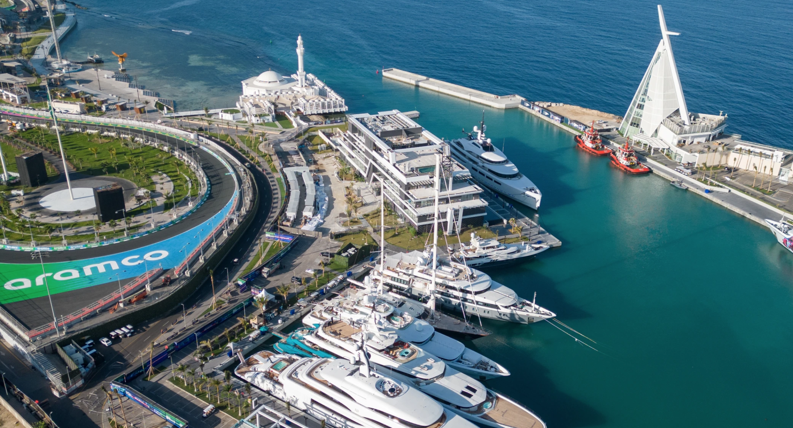
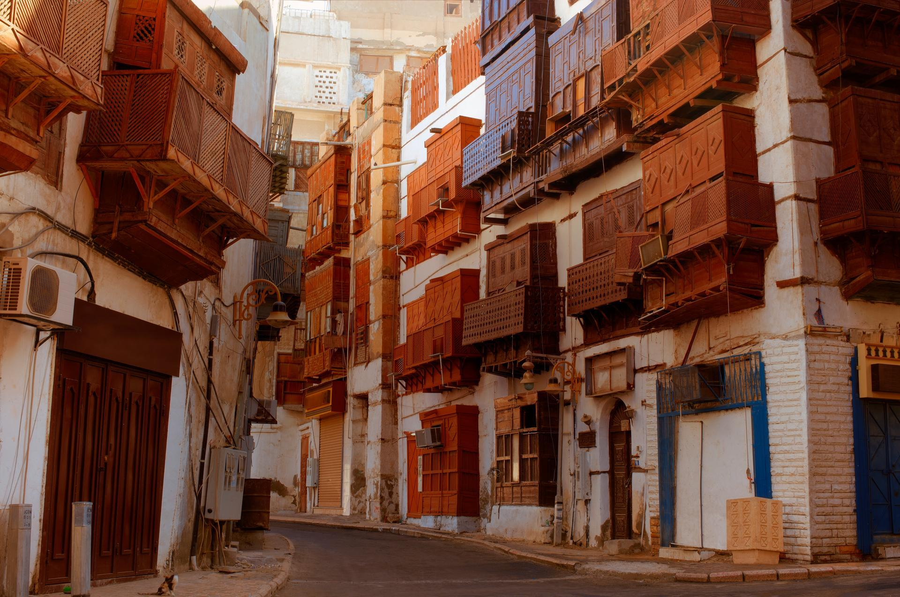
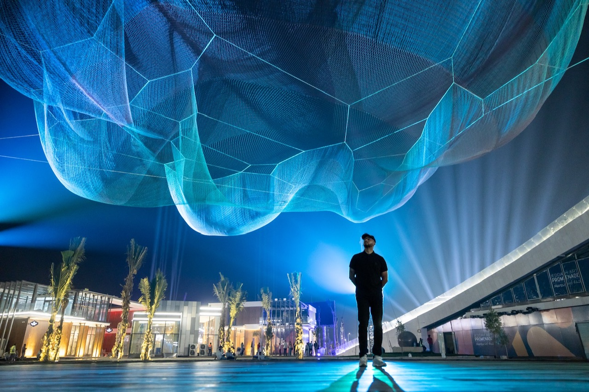
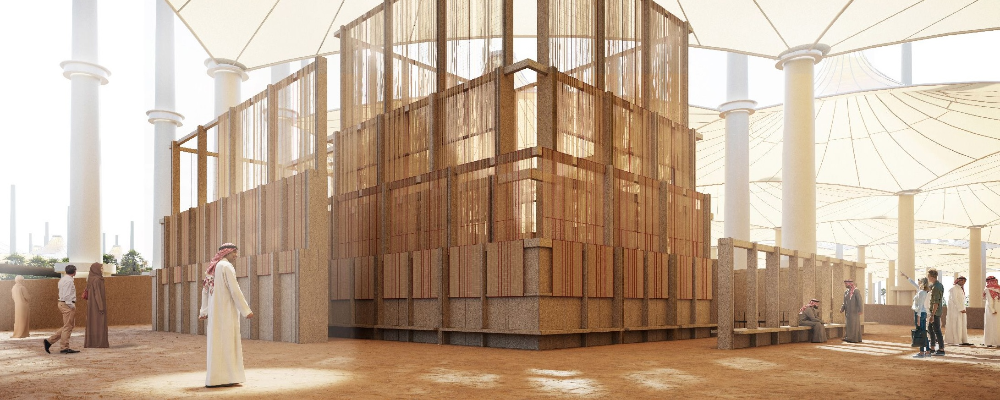
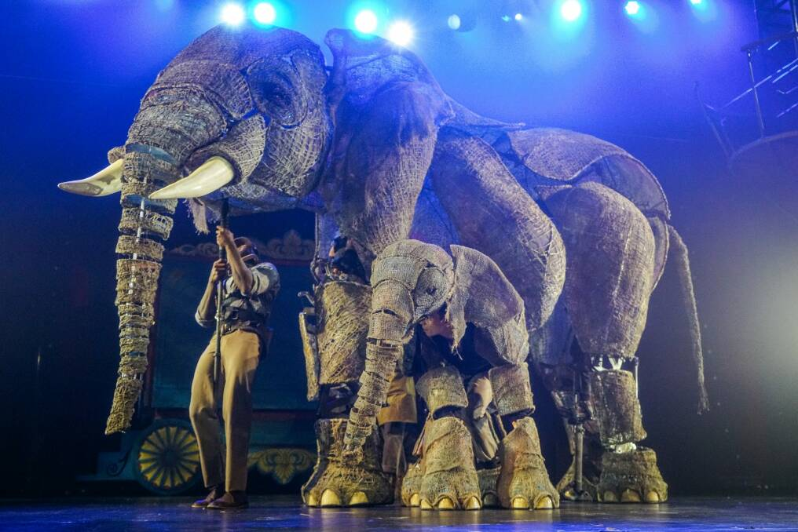
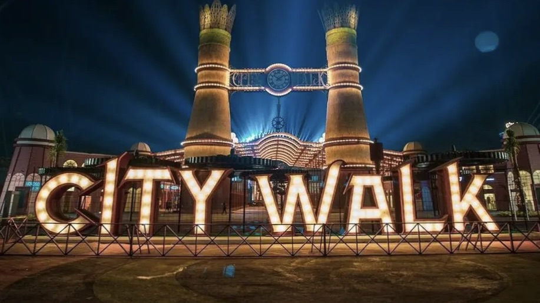
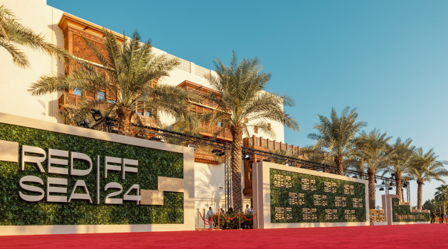
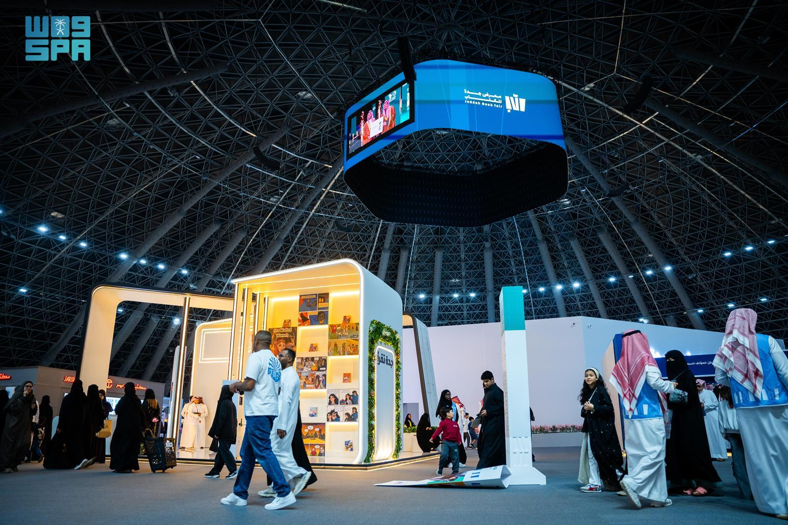

Enjoy upscale dining and breathtaking marina views at Jeddah's premier Yacht Club Indulge in gourmet cuisine while surrounded by luxury yachts and the soothing sounds of the Red Sea,Taste the artistry in every dish, crafted by world-class chefs using the freshest ingredients, and served with care in an atmosphere of pure sophistication. Whether you're celebrating a special occasion or simply embracing a moment of peace,the Yacht Club offers an unforgettable experience of elegance, tranquility, and world-class service.

Walk through the heritage streets of old Jeddah and discover its cultural charm,Explore narrow alleyways lined with coral-stone houses, intricate wooden balconies, and vibrant marketplaces echoing with the stories of centuries past.Every corner reveals a piece of history from ancient mosques and traditional souks to art galleries and local cafés. Al-Balad is where the soul of Jeddah lives on offering a timeless blend of authenticity, warmth, and architectural beauty.

Welcome to Art Promenade a breathtaking waterfront destination where the Red Sea breeze mingles with the energy of imagination and artistic expression Here, the coast comes alive with vibrant murals, immersive sculptures, live performances, and interactive art installations that celebrate both local heritage and global creativity.As you walk along the promenade, you'll encounter artists painting in real time, musicians filling the air with melodies, and families enjoying unforgettable sunsets framed by public art. Whether day or night,Art Promenade is more than a scenic walkway it’s a living gallery by the sea, offering inspiration at every step.

Discover modern interpretations of Islamic art in an inspiring global exhibition.Step into a world where tradition meets innovation — where the timeless beauty of Islamic geometry, calligraphy, and patterns is reimagined through contemporary eyes. This global exhibition brings together visionary artists from around the world, each offering a unique perspective that bridges cultural heritage with modern expression. Through paintings, digital installations, sculptures, and immersive experiences, you'll witness how Islamic art continues to evolve while honoring its spiritual and aesthetic roots. It’s more than an exhibition it’s a dialogue between past and present, East and West, faith and creativity.

Step into a world of vintage wonder as Circus 1903 brings the golden age of circus to life in the heart of Jeddah. With breathtaking acrobatics, daring stunts, and lifelike elephant puppets, the show revives the spirit of early 20th-century entertainment with a modern theatrical flair. Families and thrill-seekers alike were captivated by the nostalgic atmosphere, classic costumes, and unforgettable performances. A magical journey that blended tradition, creativity, and excitement right here on the Red Sea coast.

City Walk Jeddah is a vibrant urban destination where entertainment, culture, and cuisine come together in the heart of the city. With open-air spaces, colorful installations, immersive zones, and nightly live performances, City Walk offers a dynamic atmosphere for families, friends, and visitors of all ages.From international food trucks and local flavors to art exhibits, VR adventures, and seasonal festivals, every corner of City Walk invites you to explore, enjoy, and create unforgettable memories in Jeddah’s most lively spot.

Set against the glimmering backdrop of the Red Sea, the Red Sea Film Festival is a cinematic celebration like no other. Held in the historic and cultural heart of Jeddah, the festival brings together global filmmakers, rising talents, and cinema lovers from around the world. From red-carpet premieres to masterclasses and immersive screenings, it offers a vibrant platform for storytelling, cultural dialogue, and artistic innovation. More than just a festival it’s a movement that redefines the future of Arab cinema on an international stage.

A vibrant celebration of literature, learning, and culture, the Jeddah Book Fair transforms the city into a hub of ideas and inspiration. Welcoming publishers, authors, and readers from around the globe, the fair offers thousands of books across all genres, alongside engaging panels, workshops, and artistic performances. Whether you’re a passionate reader or a curious explorer, it’s a place where stories come to life and knowledge is shared under one roof right on the shores of the Red Sea.